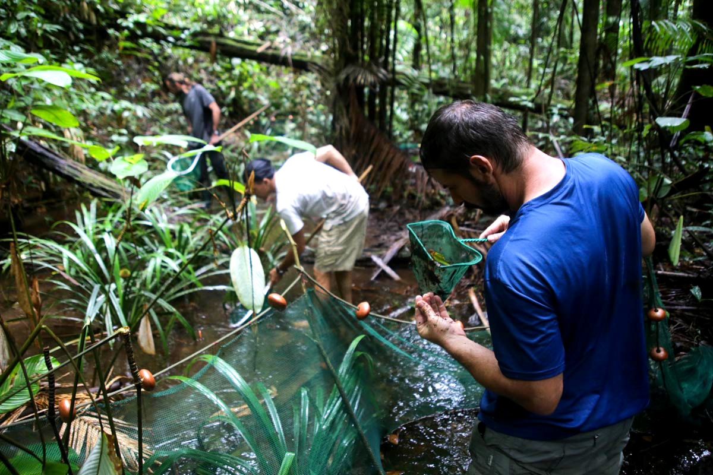

Point de filets à papillons ni de pièges complexes, mais des épuisettes et une combinaison de plongée. Dans l’expédition scientifique du Mitaraka, les ichtyologues, ces spécialistes la faune aquatique, barbotent dans les cours d’eau en quête de nouvelles espèces à étudier.
Le départ au petit matin ressemble à celui de n’importe quelle autre spécialité. Les sacs chargés de matériel et d’un encas, les ichtyologues se battent avec la boue omniprésente sur le sentier. Au moins, ils ont l’habitude de passer la journée les pieds dans l’eau. GPS à la main, Sébastien Brosse a repéré deux petits cours d’eau à proximité du layon. La crique, d’une vingtaine de centimètres de profondeur, interpelle par sa modestie. C’est pourtant exactement ce que cherchait Sébastien Brosse, professeur à l’université de Toulouse. « Nous travaillons sur toutes les criques où nous pouvons utiliser des protocoles standardisés, c'est-à-dire moins de dix mètres de large pour une profondeur inférieure à un mètre », explique-t-il. « Ensuite, nous essayons de définir deux tronçons présentant des habitats différents en termes de débit, d’abri pour les poissons ou de substrat, pour pouvoir relier les espèces collectées à leur milieu. »
A peine arrivés, Sébastien Brosse et son acolyte Régis Vigouroux délimitent deux parcelles le long de la crique, l’une présentant un milieu sableux et jonché de bois mort, l’autre abritant de nombreuses plantes aquatiques. Deux filets sont tirés d’une rive à l’autre pour marquer la fin de chaque parcelle. Tout est prêt pour accueillir la roténone, un insecticide naturel. Une technique de pêche étonnante, utilisée depuis des siècles par certaines tribus locales. « Les Amérindiens tirent la roténone d’une liane, nous utilisons ici un extrait naturel de cette plante », indique Sébastien Brosse. « Cette substance bloque la respiration des poissons, qui remontent alors généralement à la surface. » Le dosage est délicat. L’extrait de roténone est dilué, puis versé avec précaution en amont des deux filets. Avec leurs épuisettes, les scientifiques se lancent alors dans un étrange ballet, agitant la surface pour disperser l’insecticide sur toute la largeur du cours d’eau. Si le dosage est bon, les poissons pourront être capturés vivants.
-
L’ichtyologue Frédéric Melki s’apprête à photographier les poissons d’un petit cours d’eau.
-
Avec leurs épuisettes, les scientifiques dispersent la roténone sur toute la largeur de la crique.
La technique fait débat. « Il y a encore trop peu d’études » regrette Sébastien Brosse. « Ce que l’on sait, c’est que l’on retrouve les mêmes poissons quelques semaines après une pêche à la roténone. De plus, l’impact est limité à la zone de pêche : à l’échelle du cours d’eau, il n’y a pas réellement d’effet. » Malgré cela, l’ichtyologue espère d’ici peu remplacer la roténone par des méthodes alternatives. Son équipe se penche notamment sur la métagénomique, l’analyse de l’ADN de l’ensemble des espèces du cours d’eau. « En filtrant l’eau, nous pourrions récupérer cet ADN et définir les espèces présentes sans capturer de poissons et sans impact sur l’environnement », explique le chercheur. Mais pour appliquer cette nouvelle technique, encore faut-il avoir préalablement séquencé toutes les espèces du cours d’eau, ce qui est loin d’être le cas dans ces criques du Mitaraka, jamais véritablement étudiées jusqu’ici. Faute de mieux, le produit toxique est donc ici toujours utilisé.
Après avoir parcouru les deux parcelles, guettant la moindre nageoire cachée sous une feuille, les ichtyologues relèvent les filets pour compléter leur inventaire. Une dizaine de poissons seulement, pas vraiment une pêche miraculeuse. Mais qu’importe, le vrai travail se fera de retour au camp, dans le petit laboratoire de fortune. Ici, on ne traque pas forcément la nouvelle espèce qui allongera la liste des 367 poissons d’eau douce connus de Guyane (contre 70 environ en métropole), on essaie plutôt de comprendre pourquoi elle se trouve ici, dans quel habitat elle vit et quelles autres espèces elle côtoie. En multipliant les zones d’études, les chercheurs peuvent alors comparer les assemblages – l’ensemble des espèces évoluant dans un secteur – entre l’amont et l’aval d’un même cours d’eau, mais aussi entre deux affluents différents ou deux habitats, etc.
Pour cela, au laboratoire du camp, les ichtyologues mesurent chaque individu collecté, de la taille des nageoires à celle de la mâchoire. Ces données révéleront de précieuses informations sur les habitants de la crique. Sont-elles plutôt adaptées à des courants forts ? S’agit-il majoritairement de prédateurs ? Ces paramètres seront reliés aux données relevées sur la parcelle : pH du cours d’eau, transparence, débit, température, profondeur, etc. Enfin, Régis Vigouroux effectuera un prélèvement sur chaque individu pour, en marge de futures analyses génétiques, évaluer la concentration de mercure dans le corps du spécimen ; un métal lourd, libéré notamment par les sites clandestins d’orpaillage en Guyane. « Nous sommes dans une zone peu affectée par l’homme » souligne Sébastien Brosse. « Cela nous permet de mesurer une différence entre ce que l’on voit ici et ce que l’on observe autour des zones plus peuplées, et donc de mesurer l’impact humain, que cela soit au niveau de l’orpaillage ou de la pollution. »
-

En amont des filets, les épuisettes permettent de débusquer les petits poissons cachés sous la surface.
En parallèle de ce travail sur l’écologie des cours d’eau, les ichtyologues ne délaissent pas l’angle taxonomique : référencer les espèces vivant ici et, pourquoi pas, en découvrir de nouvelles. Un travail dont se charge surtout Frédéric Melki, président de la Fondation Biotope et passionné depuis l’enfance par les poissons d’eau douce. Sur la parcelle étudiée, tandis que ses deux collègues sortent leurs filets et diluent la roténone, il enfile une combinaison de plongée, un masque et un tuba. Image surréaliste d’un homme-grenouille barbotant dans vingt centimètres d’eau au cœur d’une forêt tropicale… Pourtant, sous la surface, un monde insoupçonné s’offre à l’objectif photo du naturaliste. Une eau étonnamment claire aux reflets bruns, un amoncellement chaotique de feuilles, de branches et de plantes aquatiques. Et des poissons, le plus souvent cachés dans ces abris naturels. « J’essaye d’identifier et de prendre en photo toutes les espèces que je croise et je fais un maximum d’observations sur la manière dont les poissons utilisent l’habitat », raconte Frédéric Melki. « Lorsqu’un habitat risque d’être dégradé, on peut ainsi savoir quels poissons seront les plus affectés. »
L’appareil photo n’est pas le seul outil de l’ichtyologue : lorsqu’il plonge, son épuisette n’est jamais bien loin, prête à capturer un spécimen intéressant qui passera quelque temps dans le petit aquarium du camp. « Une des difficultés en Guyane, c’est la morphologie des formes juvéniles », constate Frédéric Melki. « Je ramène certains poissons vivants pour les faire grandir en aquarium et étudier les différentes livrées entre le juvénile et l’adulte. »
Mais pour l’instant, la pêche n’est pas aussi fructueuse qu’il l’espérait, la faute aux conditions météorologiques particulièrement mauvaises. Les trombes d’eau qui tombent sur le massif du Mitaraka depuis une semaine ont fait sortir les criques de leur lit et rendu la visibilité sous la surface quasiment nulle. « Nous atteignons les limites de la méthode », regrette Frédéric Melki. « Pourtant, c’est un endroit très isolé, donc les chances de trouver de nouvelles espèces sont potentiellement grandes. » Comme tous les scientifiques ici, les ichtyologues n’attendent qu’une chose : que le ciel devienne plus clément pour cette ultime semaine d’expédition. Et qu’il rende le terrain plus propice à étancher leur soif de découverte.
Yann Chavance
-
En marge des pêches à la roténone, les ichtyologues complètent l’inventaire avec une pêche à vue ou au filet.